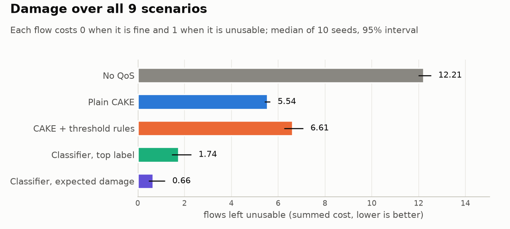

<title>AQoSE Team Briefing</title>
<link rel="preconnect" href="https://fonts.googleapis.com">
<link rel="preconnect" href="https://fonts.gstatic.com" crossorigin>
<link rel="stylesheet" href="https://fonts.googleapis.com/css2?family=Bricolage+Grotesque:opsz,wght@12..96,600;12..96,700&family=Atkinson+Hyperlegible:ital,wght@0,400;0,700;1,400&family=JetBrains+Mono:wght@400;500&display=swap">
<style>
/* Layout: one calm reading column for teammates who are not networking people; tables and charts
   step out to a wider measure. Status colours mean done / running / next, nothing else. */
:root {
  --paper: #f6f7fa;
  --sheet: #fcfcfb;
  --ink: #171a2b;
  --muted: #4b5064;
  --faint: #737890;
  --line: #dcdfe8;
  --accent: #5242c4;
  --accent-soft: #ebe8fb;
  --done: #1d7a52;
  --done-soft: #e2f3ea;
  --run: #9a5800;
  --run-soft: #fbefd9;
  --next: #4b5064;
  --next-soft: #eceef3;
  --display: "Bricolage Grotesque", "Avenir Next", "Segoe UI", Arial, sans-serif;
  --body: "Atkinson Hyperlegible", "Segoe UI", Verdana, Arial, sans-serif;
  --mono: "JetBrains Mono", ui-monospace, Menlo, Consolas, monospace;
  --measure: 42rem;
  --wide: 62rem;
}
@media (prefers-color-scheme: dark) {
  :root:not([data-theme="light"]) {
    --paper: #12141f; --sheet: #fcfcfb; --ink: #eceef5; --muted: #b0b5c7; --faint: #8b90a6; --line: #2a2e42;
    --accent: #a69cf4; --accent-soft: #24213f; --done: #5cc99a; --done-soft: #15291f; --run: #f0b552;
    --run-soft: #2d2414; --next: #b0b5c7; --next-soft: #20232f; color-scheme: dark;
  }
}
:root[data-theme="dark"] {
  --paper: #12141f; --sheet: #fcfcfb; --ink: #eceef5; --muted: #b0b5c7; --faint: #8b90a6; --line: #2a2e42;
  --accent: #a69cf4; --accent-soft: #24213f; --done: #5cc99a; --done-soft: #15291f; --run: #f0b552;
  --run-soft: #2d2414; --next: #b0b5c7; --next-soft: #20232f; color-scheme: dark;
}

body { background: var(--paper); color: var(--ink); font: 400 1.0625rem/1.65 var(--body); }
.page { padding-inline: 1.25rem; padding-block: 2.75rem 5rem; display: grid; gap: 3.5rem; }
.page > * { width: 100%; max-width: var(--measure); margin-inline: auto; min-width: 0; }
.page > .wide { max-width: var(--wide); }
h1, h2, h3 { font-family: var(--display); line-height: 1.12; margin: 0; text-wrap: balance; }
h1 { font-size: clamp(2.3rem, 6vw, 3.4rem); font-weight: 700; letter-spacing: -0.015em; }
h2 { font-size: 1.7rem; font-weight: 700; }
h3 { font-size: 1.15rem; font-weight: 600; }
p { margin: 0; }
section, header { display: grid; gap: 1rem; }
a { color: var(--accent); }
strong { font-weight: 700; }
.kicker { font: 500 0.78rem/1.3 var(--mono); letter-spacing: 0.08em; text-transform: uppercase; color: var(--faint); }
.lede { font-size: 1.2rem; line-height: 1.55; color: var(--muted); }
.note { font-size: 0.92rem; color: var(--muted); }
.mono { font-family: var(--mono); font-size: 0.88em; }
.num { font-variant-numeric: tabular-nums; }

/* Status: the first thing a teammate wants to know. */
.status-list { list-style: none; margin: 0; padding: 0; display: grid; gap: 0.6rem; }
.status-list li { display: grid; grid-template-columns: 6.2rem 1fr; gap: 0.9rem; align-items: baseline; }
.pill { font: 500 0.74rem/1 var(--mono); letter-spacing: 0.06em; text-transform: uppercase; padding: 0.38rem 0.55rem;
  border-radius: 999px; text-align: center; white-space: nowrap; }
.pill.done { color: var(--done); background: var(--done-soft); }
.pill.run { color: var(--run); background: var(--run-soft); }
.pill.next { color: var(--next); background: var(--next-soft); }
.status-list li > span:last-child { min-width: 0; }

/* The four steps: a real sequence, so they are numbered. */
.steps { list-style: none; margin: 0; padding: 0; display: grid; gap: 1.1rem; counter-reset: step; }
.steps li { display: grid; grid-template-columns: 2.4rem 1fr; gap: 0.9rem; counter-increment: step; }
.steps li::before { content: counter(step); font: 700 1.6rem/1 var(--display); color: var(--accent); padding-top: 0.15rem; }
.steps li > div { display: grid; gap: 0.25rem; min-width: 0; }

.w { max-width: var(--measure); }
h3.part { margin-top: 1.4rem; padding-top: 1rem; border-top: 1px solid var(--line); }
.diagram { overflow-x: auto; border: 1px solid var(--line); border-radius: 4px; padding: 1rem; background: var(--sheet); color: #171a2b; }
pre.mermaid { margin: 0; text-align: center; }
pre.topo { margin: 0; overflow-x: auto; padding: 1rem 1.1rem; border: 1px solid var(--line); border-radius: 4px; font: 400 0.82rem/1.55 var(--mono); background: var(--next-soft); color: var(--ink); }
td.best { font-weight: 700; color: var(--done); }
.example ul { margin: 0.2rem 0; }
.example { border-left: 3px solid var(--accent); background: var(--accent-soft); padding: 1rem 1.15rem; display: grid; gap: 0.5rem; }

.big-row { display: grid; grid-template-columns: repeat(auto-fit, minmax(12.5rem, 1fr)); gap: 1.6rem 2rem; }
.big { display: grid; gap: 0.3rem; align-content: start; }
.big b { font: 700 2.2rem/1 var(--display); font-variant-numeric: tabular-nums; color: var(--accent); }
.big span { font-size: 0.93rem; line-height: 1.45; color: var(--muted); }

.table-wrap { overflow-x: auto; border: 1px solid var(--line); border-radius: 4px; }
table { border-collapse: collapse; width: 100%; font-size: 0.94rem; font-variant-numeric: tabular-nums; }
th, td { padding: 0.6rem 0.8rem; text-align: left; vertical-align: top; border-bottom: 1px solid var(--line); }
thead th { font: 500 0.74rem/1.3 var(--mono); letter-spacing: 0.06em; text-transform: uppercase; color: var(--faint); background: var(--paper); }
tbody tr:last-child td { border-bottom: 0; }
td.n { text-align: right; white-space: nowrap; }
td.tag { font-family: var(--mono); font-size: 0.85rem; white-space: nowrap; }
.win { color: var(--done); font-weight: 700; }
.tie { color: var(--faint); }

/* Timeline: dates down the left, events on the right. */
.timeline { display: grid; gap: 0; border-left: 2px solid var(--line); margin-left: 0.4rem; }
.day { display: grid; gap: 0.45rem; padding: 0 0 1.5rem 1.4rem; position: relative; }
.day::before { content: ""; position: absolute; left: -0.45rem; top: 0.45rem; width: 0.8rem; height: 0.8rem; border-radius: 50%;
  background: var(--paper); border: 2px solid var(--accent); }
.day.future::before { border-color: var(--faint); border-style: dashed; }
.day .when { font: 500 0.8rem/1.3 var(--mono); letter-spacing: 0.05em; color: var(--accent); text-transform: uppercase; }
.day.future .when { color: var(--faint); }
.day ul { margin: 0; padding-left: 1.1rem; display: grid; gap: 0.35rem; }

figure { margin: 0; display: grid; gap: 0.55rem; }
figure img { width: 100%; height: auto; display: block; background: var(--sheet); border: 1px solid var(--line); border-radius: 4px; }
figcaption { font-size: 0.92rem; line-height: 1.5; color: var(--muted); }

dl.terms { margin: 0; display: grid; grid-template-columns: minmax(8rem, 12rem) 1fr; gap: 0.75rem 1.4rem; }
dl.terms dt { font-weight: 700; }
dl.terms dd { margin: 0; color: var(--muted); min-width: 0; }
@media (max-width: 34rem) { dl.terms { grid-template-columns: 1fr; gap: 0.2rem; } dl.terms dd { margin-bottom: 0.7rem; } }

.two { display: grid; grid-template-columns: repeat(auto-fit, minmax(16rem, 1fr)); gap: 1.5rem 2.2rem; }
.two > div { display: grid; gap: 0.6rem; align-content: start; min-width: 0; }
.two ul, ul.plain { margin: 0; padding-left: 1.15rem; display: grid; gap: 0.45rem; }
.say h3 { color: var(--done); } .dont h3 { color: var(--run); }
:focus-visible { outline: 2px solid var(--accent); outline-offset: 2px; }
</style>

<main class="page">

<header>
  <p class="kicker">For the AQoSE team · Thursday Oct 15, 2026 · internal, not the submission</p>
  <h1>How AQoSE works, and what happened this week</h1>
  <p class="lede">The architecture and the engineering behind AQoSE, part by part with the real settings, then how the evidence is produced, what it shows so far and what is still running. Written in plain language; every number is measured.</p>
  <p class="note">The numbers on this page are from the main experiment, which finished this morning. They are close to final but not final: the frozen system is being re-tested right now, and those results replace these on Friday.</p>
</header>

<section>
  <p class="kicker">Right now</p>
  <h2>Where things stand</h2>
  <ul class="status-list">
    <li><span class="pill done">Done</span><span>The system is built, trained and tested: 450 test runs plus 90 noise-check runs, every one valid.</span></li>
    <li><span class="pill done">Done</span><span>The system was <strong>frozen</strong> at 07:41 today: no more changes to it, so the final tests are fair.</span></li>
    <li><span class="pill run">Running</span><span>Final tests of the frozen system, including fresh test settings and a brand-new home situation. Ends around <strong>Fri Oct 16, 9 AM</strong>.</span></li>
    <li><span class="pill run">Waiting</span><span>Real WhatsApp video calls replayed in the test network, to check the system works on real traffic and not only on our own fake traffic. Starts by itself after the final tests; ends around <strong>Fri noon</strong>.</span></li>
    <li><span class="pill next">Next</span><span>Final report (PDF) and the one-slide summary with final numbers: <strong>Friday afternoon or evening</strong>. Submission deadline: <strong>Oct 23</strong>.</span></li>
  </ul>
</section>

<section>
  <p class="kicker">The problem, in two lines</p>
  <h2>CAKE is fair to devices and blind to apps</h2>
  <p>CAKE shares the line per device, then per connection, so a call that shares its laptop with twenty bulk connections gets a twentieth of the laptop's share. CAKE's four tins (Voice, Video, Best Effort, Bulk) could fix that, but nothing tells CAKE which connection is the call, and threshold rules mistake calls and cloud games for downloads because all three send many packets.</p>
</section>

<section class="wide">
  <p class="kicker">Architecture</p>
  <h2>Two paths: the kernel moves packets, AQoSE only labels them</h2>
  <p class="w">The design rule everything follows: <strong>no AQoSE code sits on the per-packet path.</strong> The kernel forwards every packet and CAKE queues it. AQoSE writes one label per connection into the kernel's connection tracker, and CAKE reads that label for each packet. If AQoSE is slow, wrong or dead, packets still flow; the worst case is plain CAKE.</p>
  <div class="diagram">
<pre class="mermaid">
flowchart TB
    LAN(["LAN devices"])
    WAN(["Internet"])
    subgraph KERNEL["Linux kernel: the only per-packet path"]
        direction LR
        CT["conntrack<br/>mark = the flow's tin"]
        CAKE["CAKE diffserv4<br/>upload on wan0, download on an IFB"]
    end
    subgraph AQOSD["aqosd, the controller (Go)"]
        direction TB
        EXT["Feature extractor<br/>nflog, first 8 packets"]
        REC["Reclassifier<br/>class envelopes, 1/s"]
        CAP["Capacity estimator<br/>3 reflectors, 100 ms"]
        INT["Intent leases<br/>HTTP API"]
        VER["QoE verifier<br/>tin delay before/after"]
        SHIELD{"Safety shield<br/>pure function"}
        ENF["Enforcer<br/>snapshot, apply, read back"]
        HB["Heartbeat<br/>every 250 ms"]
    end
    subgraph SVC["aqos-classify (Go), Unix socket"]
        CLS["259 boosted trees<br/>7 class probabilities"]
        DEC["Decision engine<br/>expected damage + guards"]
    end
    WD["aqos-watchdog<br/>separate process"]
    LAN --> CAKE --> WAN
    CT -->|"mark read per packet"| CAKE
    CAKE -.->|"headers of packets 1-8"| EXT
    CT -.->|"byte/packet counters, 1/s"| REC
    EXT -->|"feature record"| CLS
    REC -->|"window record on breach"| CLS
    CLS --> DEC
    INT -->|"leased classes"| DEC
    DEC -->|"label proposal"| SHIELD
    CAP -->|"rate proposal"| SHIELD
    VER -->|"rollback proposal"| SHIELD
    SHIELD -->|"accept / clamp"| ENF
    ENF -->|"set mark"| CT
    ENF -->|"set shaper rate"| CAKE
    CAKE -.->|"tin delay"| VER
    HB -.->|"file age"| WD
    WD ==>|"silent 2 s: plain CAKE"| CAKE
</pre>
  </div>
  <div class="table-wrap">
    <table>
      <thead><tr><th>Process</th><th>Language</th><th>Where it runs</th><th>Job</th></tr></thead>
      <tbody>
        <tr><td class="tag">aqosd</td><td>Go</td><td>router</td><td>The controller: extractor, flow table, reclassifier, capacity estimator, verifier, lease API, shield, enforcer, heartbeat</td></tr>
        <tr><td class="tag">aqos-classify</td><td>Go</td><td>router</td><td>The model and the decision rule behind a Unix socket. Used in the final runs</td></tr>
        <tr><td class="tag">aqos_ml.serve</td><td>Python</td><td>router</td><td>Same socket protocol; runs the threshold rules (B4) and was the model service before the Go port</td></tr>
        <tr><td class="tag">aqos-watchdog</td><td>Go, standard library only</td><td>router</td><td>Watches the heartbeat; restores plain CAKE if the controller stops</td></tr>
        <tr><td class="tag">aqos-testbed</td><td>Go</td><td>host</td><td>Builds the emulated home: network namespaces, links, rate limits, delay</td></tr>
        <tr><td class="tag">aqos_ml.gen / .run</td><td>Python</td><td>host, devices, server</td><td>Traffic generators that measure every packet; the experiment runner</td></tr>
      </tbody>
    </table>
  </div>
</section>

<section>
  <p class="kicker">Life of one connection</p>
  <h2>From first packet to protected lane, about 50 ms of traffic</h2>
  <ol class="steps">
    <li><div><h3>Packet 1 creates a conntrack entry with mark 0</h3><p>Mark 0 means unlabelled, and CAKE picks the tin from the packet's own DSCP: exactly plain CAKE. For a 30 fps call the first 8 packets take a few tens of milliseconds.</p></div></li>
    <li><div><h3>Packets 1 to 8 are copied to the extractor, headers only</h3><p>One nftables rule does the filtering in the kernel: <span class="mono">ct packets &lt; 9 log group 5 snaplen 64</span>. The extractor never sees packet 9 or any payload. After packet 8 it emits an <em>initial</em> feature record.</p></div></li>
    <li><div><h3>The controller asks the classify service</h3><p>One JSON line over a Unix socket, with a 50 ms deadline, a queue of at most 1,024 requests and a cap of 200 classifications per second. Any timeout, error or full queue leaves the flow unlabelled.</p></div></li>
    <li><div><h3>The service returns probabilities and a proposal</h3><p>259 trees give seven class probabilities in about 6 µs (Go). The decision engine turns them into a tin, a DSCP and a plain-English reason, for example "Looks like a video call (100% confident); the Video tin has the lowest expected damage."</p></div></li>
    <li><div><h3>The safety shield returns accept, clamp or reject</h3><p>A pure function of the proposal and the current state. A reject stops here and the flow stays as it is.</p></div></li>
    <li><div><h3>The enforcer writes the mark and reads it back</h3><p>Over netlink, only the low 3 bits of the conntrack mark. A read-back mismatch restores the previous value. From the next packet on, CAKE puts the flow in its new tin, both directions.</p></div></li>
    <li><div><h3>The flow is watched until conntrack destroys it</h3><p>Once a second its counters are compared with its class's normal range. A breach sends a <em>window</em> record back to step 3. A promotion into Voice or Video is checked by the verifier 10 s later and undone if tin delay got worse.</p></div></li>
  </ol>
</section>

<section>
  <p class="kicker">Component by component</p>
  <h2>How each part works, with its real settings</h2>

  <h3 class="part">Marking: how a label reaches CAKE</h3>
  <p>The label is the low three bits of the connection's conntrack mark. CAKE's <span class="mono">fwmark 0x7</span> option maps a mark of n to tin n.</p>
  <div class="table-wrap">
    <table>
      <thead><tr><th>Mark</th><th>Tin</th><th>Classes that land there</th></tr></thead>
      <tbody>
        <tr><td class="tag">0</td><td>chosen by DSCP (plain CAKE)</td><td>unlabelled flows</td></tr>
        <tr><td class="tag">1</td><td>Bulk</td><td>background transfer (CS1)</td></tr>
        <tr><td class="tag">2</td><td>Best Effort</td><td>web and other (CS0), large download (AF11)</td></tr>
        <tr><td class="tag">3</td><td>Video</td><td>video call (AF41), streaming (AF31)</td></tr>
        <tr><td class="tag">4</td><td>Voice</td><td>voice call (EF), game and cloud game (CS4)</td></tr>
      </tbody>
    </table>
  </div>
  <ul class="plain">
    <li><strong>Upload:</strong> a postrouting rule copies the label onto each packet (<span class="mono">meta mark set ct mark and 0x7</span>); CAKE on <span class="mono">wan0</span> reads it.</li>
    <li><strong>Download:</strong> packets from the WAN are redirected to an IFB device, and the tc filter restores the label first (<span class="mono">action ctinfo cpmark 0x7</span>); a second CAKE on the IFB reads it.</li>
    <li><strong>Why a mark and not DSCP rewriting:</strong> mark 0 falls through to CAKE's normal behaviour, so "unlabelled equals plain CAKE" holds by construction, and removing two rules switches the whole system off. That is what the watchdog does.</li>
    <li>Verified in the testbed: marks 1 to 4 land in Bulk, Best Effort, Video and Voice in both directions, IPv4 and IPv6, with at most 3 stray packets per flow.</li>
  </ul>

  <h3 class="part">Feature extractor</h3>
  <ul class="plain">
    <li>Receives packets 1 to 8 of each flow over nflog, stamped by the kernel, so the gaps are kernel receive times, not when the program woke up. Queue threshold is one packet: no batching delay.</li>
    <li>Flow table keyed on the 5-tuple. <span class="mono">flow_id</span> and <span class="mono">host_id</span> are keyed hashes (random key per boot); real addresses never leave the controller.</li>
    <li>Once a second it dumps conntrack counters and keeps five one-second samples per flow for the nine window features.</li>
    <li>The same Go package runs offline on a pcap (<span class="mono">aqos-extract</span>), so training data and live data come from one code path. Checked: 120 of 120 flows gave identical records live and offline.</li>
  </ul>
  <div class="table-wrap">
    <table>
      <thead><tr><th>The 28 model inputs</th><th class="n">Count</th><th>Notes</th></tr></thead>
      <tbody>
        <tr><td>Sizes of packets 1 to 8</td><td class="n">8</td><td>IP length, signed by direction (up positive, down negative)</td></tr>
        <tr><td>Gaps between them</td><td class="n">7</td><td>microseconds</td></tr>
        <tr><td>IP version, protocol</td><td class="n">2</td><td>4 or 6; TCP or UDP</td></tr>
        <tr><td>Port class, both ends</td><td class="n">2</td><td>system, registered or dynamic range; raw port numbers are never used</td></tr>
        <tr><td>Window statistics</td><td class="n">9</td><td>packets/s and bytes/s each way, mean size each way, size spread, rate variation, burstiness. Missing (NaN) on an initial record</td></tr>
      </tbody>
    </table>
  </div>

  <h3 class="part">Classifier</h3>
  <ul class="plain">
    <li><strong>Model:</strong> LightGBM gradient-boosted trees, 37 boosting rounds × 7 classes = 259 trees, up to 127 leaves each, learning rate 0.05. Settings picked from 12 random draws; rounds set by early stopping.</li>
    <li><strong>Calibration:</strong> temperature scaling on a separate calibration split (probabilities = softmax(1.125 × raw scores)). Sigmoid, isotonic and temperature were all tried; the one with the lowest class-balanced expected damage was kept, not the lowest calibration error, because calibration error is dominated by web traffic.</li>
    <li><strong>Data (v2):</strong> 246,274 records from 7 sources: ISCX Tor/non-Tor and VPN-nonVPN, Purdue video calls (Zoom, Meet, Teams, Webex), UNSW cloud gaming, Labayen, our testbed generators and our own captures (JioGamesCloud, WhatsApp). Split by session, never by record: 156,049 train, 29,250 calibration, 43,221 validation, plus a sealed test set.</li>
    <li><strong>Weights:</strong> each flow counts once however many records it has, and each class counts the same however many flows it has.</li>
    <li><strong>Selection:</strong> LightGBM against a random forest (300 trees) on the same splits, judged by class-balanced expected damage through the real decision engine. They tied on quality; LightGBM is 10× faster and 8× smaller.</li>
    <li><strong>Go port:</strong> the trees are exported as plain data (<span class="mono">trees.json</span>, 2 MB) and walked in Go, including LightGBM's missing-value rules. On 2,000 records the Go probabilities match Python's to 4×10⁻¹⁶ and every tin is the same; 300 of 300 socket answers identical. About 6 µs per flow, against about 2 ms in the Python service.</li>
    <li><strong>Scores:</strong> accuracy 0.972 and macro-F1 0.80 on validation (v2). Leaving a whole source out of training is much harsher (see "Weak spots").</li>
  </ul>

  <h3 class="part">Decision engine</h3>
  <p>For each tin, expected damage = Σ over the 7 classes of P(class) × damage[class][tin]. The tin with the lowest expected damage wins, subject to the rules below. The damage table was <em>measured</em>: each class forced into each tin beside a call, a stream, a download and a peer-to-peer transfer, under three conditions (alone on its device, crowded device, narrow uplink), two seeds each, 240 runs. A cell is the flow's own loss plus the harm it does to everything else in the home, rounded to half a point.</p>
  <div class="table-wrap">
    <table>
      <thead><tr><th>Damage table</th><th class="n">Voice</th><th class="n">Video</th><th class="n">Best Effort</th><th class="n">Bulk</th></tr></thead>
      <tbody>
        <tr><td>Voice call</td><td class="n best">0</td><td class="n">0</td><td class="n">0</td><td class="n">0</td></tr>
        <tr><td>Game, cloud game</td><td class="n best">0</td><td class="n best">0</td><td class="n">2.5</td><td class="n">6</td></tr>
        <tr><td>Video call</td><td class="n">1.5</td><td class="n best">0</td><td class="n">2</td><td class="n">2.5</td></tr>
        <tr><td>Streaming</td><td class="n best">0</td><td class="n">1</td><td class="n">0.5</td><td class="n">1.5</td></tr>
        <tr><td>Web and other</td><td class="n best">0</td><td class="n">3.5</td><td class="n best">0</td><td class="n">7</td></tr>
        <tr><td>Large download</td><td class="n">0.5</td><td class="n">4.5</td><td class="n best">0</td><td class="n">7</td></tr>
        <tr><td>Background transfer</td><td class="n">2</td><td class="n">2</td><td class="n">1.5</td><td class="n best">0</td></tr>
      </tbody>
    </table>
  </div>
  <p class="note">Read a row as "how bad is it to put this class in that tin". A download in Video costs 4.5 because it hurts the calls already there. The table rates Voice as free for most classes, because each was measured alone in Voice; hence the Voice bar below.</p>
  <ul class="plain">
    <li><strong>Voice bar:</strong> Voice is allowed only if P(voice call) + P(game) &gt; 0.5. Voice is a quarter of the link; without this the table would send everything there.</li>
    <li><strong>Demotion bar:</strong> Bulk is allowed only if the summed probability of the classes whose best tin is Bulk is over 0.8. Otherwise Best Effort.</li>
    <li><strong>Bulk guard</strong> (added for the freeze): never demote on an initial record (first 8 packets only), and never a UDP flow. Calls and games are UDP. On held-out sources this cut unseen calls, games and downloads sent to Bulk to 0% (from 16%, 2%, 10%).</li>
    <li><strong>Ties:</strong> tins within 0.05 of the lowest are a tie. A tie goes to the tin RFC 4594 gives the most likely class (never Bulk), else Best Effort, Video, Voice, Bulk in that order. Promotion is cheap; demotion needs evidence.</li>
    <li><strong>Leases:</strong> on a leased device, the damage of interactive classes in Best Effort or Bulk is multiplied by 5. Leases change the table, never the probabilities.</li>
    <li><strong>Fallback:</strong> probabilities that are missing, out of range or not summing to 1 give Best Effort with <span class="mono">decision_rule: fallback</span>.</li>
  </ul>
  <div class="example">
    <p><strong>Worked example, with the real table.</strong> A connection the model rates 45% game, 55% background backup.</p>
    <ul class="plain">
      <li>Voice: 0.45×0 + 0.55×2 = 1.10, but barred (P(call or game) = 0.45, not over 0.5)</li>
      <li>Video: 0.45×0 + 0.55×2 = <strong>1.10, lowest allowed</strong></li>
      <li>Best Effort: 0.45×2.5 + 0.55×1.5 = 1.95</li>
      <li>Bulk: 0.45×6 + 0.55×0 = 2.70</li>
    </ul>
    <p>Expected damage puts it in Video. Top label would pick Bulk (the likeliest class is the backup), and the demotion bar would then hold it in Best Effort: still a gamble with the game.</p>
  </div>

  <h3 class="part">Safety shield</h3>
  <p>A pure Go function: proposal + current state in, accept, clamp or reject out, with a reason and a code. No side effects, which is what makes it fuzzable.</p>
  <div class="table-wrap">
    <table>
      <thead><tr><th>Check</th><th>If it fails</th></tr></thead>
      <tbody>
        <tr><td>Valid against the JSON contract; DSCP matches the tin</td><td>reject</td></tr>
        <tr><td>Flow known to the flow table; proposal not stale (the "from" tin or rate is still current)</td><td>reject</td></tr>
        <tr><td>Flip cap: a third tin change within 60 s pins the flow to unlabelled for good</td><td>reject</td></tr>
        <tr><td>At most 50 re-marks per second in total</td><td>reject</td></tr>
        <tr><td>Shaper rate inside the configured minimum and maximum</td><td>clamp</td></tr>
        <tr><td>Rate step: up at most +10%, down at most −50% per proposal</td><td>clamp</td></tr>
        <tr><td>At least 10 s since the last increase in that direction (decreases are never rate-limited)</td><td>reject</td></tr>
        <tr><td>A panic inside the shield</td><td>recovered, reject</td></tr>
      </tbody>
    </table>
  </div>
  <p class="note">Fuzzed with Go's native fuzzer: 10.9 million proposals in 5 minutes, no violation. Six bugs planted on purpose, one per bound, were each found in under a second. The property is written twice, independently of the code it checks.</p>

  <h3 class="part">Enforcer</h3>
  <p>Every change is a transaction: snapshot, apply, read back, compare. A label is read back with a fresh conntrack query; a rate with <span class="mono">tc -j</span>. A mismatch restores the snapshot and is logged. A flow that ended in between is not an error. Every proposal, applied or not, is a line in the run's <span class="mono">actions.jsonl</span> with its verdict and reason.</p>

  <h3 class="part">Reclassifier</h3>
  <ul class="plain">
    <li>Each class has an envelope: the 5th to 95th percentile of each of the nine window features over its training flows.</li>
    <li>A second is "outside" when at least 2 of the 9 features are out of range. Two outside seconds in a row trigger a recheck for a flow in Voice or Video; three (checked every other second, about 6 s) for Best Effort or Bulk.</li>
    <li>A trigger sends a window record through the normal classify, decide, shield path. Back-off after a trigger: 5 s, doubling to 40 s while the flow stays outside. A routine recheck happens anyway at a random moment 30 to 60 s after the last answer.</li>
    <li>Honest finding: the envelopes are a tight box, and 38% of unchanged video-call flows would be sent back at least once. A false trigger costs one classification and changes nothing if the answer is the same; the back-off keeps that cheap.</li>
  </ul>

  <h3 class="part">QoE verifier</h3>
  <ul class="plain">
    <li>Watches promotions into Voice or Video, shaper rate increases and lease starts.</li>
    <li>Uses only what a real router can see: CAKE's per-tin delay for Voice and Video (the worse of the two, both directions) and the capacity estimator's probe delay above baseline. Never the generators' ground truth.</li>
    <li>Compares the 10 s before the change with two 5 s windows after. "Worse" means up by more than 5 ms <em>and</em> more than half, in both windows. Worse on either figure: the change is undone through the shield, and a demoted-back flow cannot be promoted again for 60 s.</li>
  </ul>

  <h3 class="part">Capacity estimator</h3>
  <ul class="plain">
    <li>Probes three UDP reflectors every 100 ms. Per reflector, a delay baseline that follows drops fast and rises slowly; the signal is delay above baseline (threshold 15 ms on most reflectors, 3 probes in a row). Unanswered probes are waited for up to 3 s, and the age of the oldest one counts as delay.</li>
    <li><strong>Download:</strong> CAKE sits after the bottleneck, so it knows what got through; a cut goes to 90% of the rate actually achieved (read 5 times a second, most of the last 600 ms).</li>
    <li><strong>Upload:</strong> CAKE sits before the bottleneck and can't see what got through, so a cut is a fixed quarter, at most once a second.</li>
    <li><strong>Download first</strong> (the freeze fix): round-trip probes can't tell which direction is queueing, so when both are busy it cuts the download and waits 2 s before touching the upload. This fixed the one run where AQoSE lost to CAKE.</li>
    <li>No second cut while delay is falling (the queue is draining). Raises: one 10% step at most every 10.5 s, never above the configured rate. Reflectors silent: hold everything.</li>
    <li>Measured in S2: drop from 100 to 20 Mbit/s detected in 360 ms, shaper under the link 1.1 s later, call p95 latency back to 16 ms within 5 s.</li>
  </ul>

  <h3 class="part">Intent leases</h3>
  <p>A small HTTP API inside the controller (<span class="mono">POST /leases</span>, <span class="mono">GET</span>, <span class="mono">DELETE</span>) and a one-page form: "prioritise this device for N minutes". At most two leases, two hours each, one per device. A lease covers the three interactive classes on that device and only shifts the decision engine's balance (×5), so it matters for flows the model is unsure about. Expiry runs on the monotonic clock and survives a restart. Known gap: it takes effect at the flow's next window record, up to 5 s, not the 1 s target.</p>

  <h3 class="part">Watchdog</h3>
  <p>A separate binary, Go standard library only, sharing no code with the controller. The controller touches a heartbeat file every 250 ms from the loop that applies labels, and only while the extractor loop is alive too. If the file is older than 2 s, the watchdog removes the marking rule and filter and replaces both CAKE instances with plain CAKE at fixed safe rates. Measured: 2.06 to 2.14 s after <span class="mono">kill -9</span> or <span class="mono">kill -STOP</span>; 2.02 to 2.03 s in every S10 run. Never before 1.9 s, so a short stall doesn't trip it.</p>
</section>

<section>
  <p class="kicker">The test rig</p>
  <h2>How the evidence is produced</h2>
  <h3 class="part">Testbed</h3>
  <p>Rootless: one user namespace holding a network namespace per device plus four fixed ones. No sudo for any experiment.</p>
  <pre class="topo">host-laptop  ─┐
host-desktop ─┼─ br-lan [router] wan0 ── [isp] ── [core] ── [server]
host-tv      ─┘   CAKE, aqosd           rate      delay     generators,
                                         500 ms    netem     reflectors
                                         FIFO</pre>
  <ul class="plain">
    <li><strong>isp</strong> is the bottleneck: a token bucket with a 500 ms FIFO, the "bloated modem" every configuration sits behind. <strong>core</strong> adds delay. They are separate so a rate limiter and netem never share an interface.</li>
    <li>Offloads (TSO, GSO, GRO) are off on every link, or the router would see merged packets far larger than any real link carries and first-packet sizes would be wrong.</li>
    <li>Rate accuracy: 0.00% error up and down on S1's link, repeatable to 0.01%.</li>
  </ul>
  <h3 class="part">Traffic generators</h3>
  <ul class="plain">
    <li>Eleven profiles: voice call, video call, gaming, cloud gaming, adaptive video streaming, web browsing, bulk download, game update, backup upload, peer-to-peer, flow storm.</li>
    <li>Every packet carries a sequence number, a send timestamp and its frame number. A frame is late if its last packet arrives after send time + deadline (100 ms for calls, 50 ms for games) or never.</li>
    <li>A plan is a pure function of scenario, traffic entry and seed. Both ends compute it, so the same seed gives byte-identical traffic on every configuration, and nothing is signalled during a run.</li>
    <li>New this week: a video call can replay a recorded trace (real sizes, timing and first packets of a WhatsApp call). Scenarios S12 and S13 use it.</li>
  </ul>
  <h3 class="part">Runs, scoring and statistics</h3>
  <ul class="plain">
    <li>Each run: 20 s warm-up + 180 s measured, about 3.45 minutes wall time. The runner locks the testbed, checks validity (all generators exited cleanly, the watchdog fired when it should) and writes a manifest with versions and the git commit.</li>
    <li>Per-flow cost from 0 (fine) to 1 (unusable): calls and games from late frames, loss, p95 latency and jitter; streams from stalls and lost bitrate; downloads from throughput lost against the same download under plain CAKE. Thresholds live in a config file, and raw measurements are kept, so other judgements need no new runs.</li>
    <li>Comparisons are paired by seed. Reported: median and 95% bootstrap interval, Wilcoxon signed-rank p-value, rank-biserial effect size, Holm correction for the comparisons not named in advance. A difference inside the A/A noise band counts as a tie.</li>
  </ul>
</section>

<section class="wide">
  <p class="kicker">At a glance</p>
  <h2>The system in numbers</h2>
  <div class="table-wrap">
    <table>
      <thead><tr><th>What</th><th class="n">Value</th><th>Source</th></tr></thead>
      <tbody>
        <tr><td>Packets the controller sees per flow</td><td class="n">≤ 8, headers only</td><td>kernel rule, measured 1,082 for 180 flows</td></tr>
        <tr><td>Time to classify one flow</td><td class="n">≈ 6 µs (Go) · ≈ 2 ms (Python)</td><td>benchmarks</td></tr>
        <tr><td>Model size</td><td class="n">1.5 MB (2 MB as Go data)</td><td>models/lgbm-v2-b3f691d8</td></tr>
        <tr><td>Request deadline · queue · cap</td><td class="n">50 ms · 1,024 · 200/s</td><td>controller settings</td></tr>
        <tr><td>Line-speed drop detected</td><td class="n">360 ms</td><td>S2</td></tr>
        <tr><td>Fallback to plain CAKE after a crash</td><td class="n">2.02–2.14 s</td><td>watchdog tests, S10</td></tr>
        <tr><td>Shield fuzzing</td><td class="n">10.9 M proposals, 0 violations</td><td>make fuzz</td></tr>
        <tr><td>Tests</td><td class="n">≈ 200 unit, 16 testbed, 2 fuzz targets</td><td>make check, testbed-check, fuzz</td></tr>
        <tr><td>Runs so far</td><td class="n">450 + 90 A/A, all valid</td><td>results-core, results-aa</td></tr>
      </tbody>
    </table>
  </div>
</section>

<section class="wide">
  <p class="kicker">Results so far</p>
  <h2>It fixes the case CAKE gets wrong, and ties it everywhere else</h2>
  <p style="max-width: var(--measure)">"Late frames" means video or game frames that arrived too late to show, so the picture freezes or stutters. Above about 5% a call visibly stutters; above 20% it is unusable. Numbers below are the middle value over 10 repeats.</p>
  <div class="big-row">
    <div class="big"><b>94% → 1.7%</b><span>late frames on an HD video call while the same laptop shares files (S6). Plain CAKE, then AQoSE.</span></div>
    <div class="big"><b>83% → 0.7%</b><span>late frames on a cloud game while the same PC downloads a game update (S7).</span></div>
    <div class="big"><b>93% → 0.2%</b><span>late frames on a work call on a busy evening at home, with a backup running (S5).</span></div>
    <div class="big"><b>0 of 90</b><span>test pairs where AQoSE did worse than the threshold rules existing tools use. It won 52 and tied 38.</span></div>
  </div>
  <figure>
    
    <figcaption>One run of S7, second by second. When the game update starts, plain CAKE lets almost every game frame arrive late. AQoSE had already recognised the game and put it in a protected lane, so after one short blip the game stays smooth.</figcaption>
  </figure>
  <div class="table-wrap">
    <table>
      <thead><tr><th>Situation</th><th>What happens in it</th><th>Plain CAKE</th><th>AQoSE</th><th>Result</th></tr></thead>
      <tbody>
        <tr><td class="tag">S1</td><td>A big download starts during a video call (on another device)</td><td class="n">fine</td><td class="n">fine</td><td class="tie">tie</td></tr>
        <tr><td class="tag">S2</td><td>The internet line suddenly drops to a fifth of its speed during a call</td><td class="n">56% late</td><td class="n">1.0% late</td><td class="win">AQoSE better*</td></tr>
        <tr><td class="tag">S3</td><td>Three TVs streaming and a game console</td><td class="n">fine</td><td class="n">fine</td><td class="tie">tie</td></tr>
        <tr><td class="tag">S4</td><td>A cloud backup fills the upload during a game (on another device)</td><td class="n">fine</td><td class="n">fine</td><td class="tie">tie</td></tr>
        <tr><td class="tag">S5</td><td>Work call on a laptop that is backing up, busy evening</td><td class="n">93% late</td><td class="n">0.2% late</td><td class="win">AQoSE better</td></tr>
        <tr><td class="tag">S6</td><td>HD video call on a laptop that is also sharing files</td><td class="n">94% late</td><td class="n">1.7% late</td><td class="win">AQoSE better</td></tr>
        <tr><td class="tag">S7</td><td>Cloud game on a PC that is downloading a game update</td><td class="n">83% late</td><td class="n">0.7% late</td><td class="win">AQoSE better</td></tr>
        <tr><td class="tag">S8</td><td>Traffic that changes: camera off and on, game lobby then match</td><td class="n">62% late</td><td class="n">0% late</td><td class="win">AQoSE better</td></tr>
        <tr><td class="tag">S10</td><td>Things break: the speed checks go silent, then AQoSE is killed</td><td class="n">fine</td><td class="n">fine</td><td class="tie">tie</td></tr>
      </tbody>
    </table>
  </div>
  <p class="note" style="max-width: var(--measure)">* S2 is won by a different part of AQoSE, the line-speed checker, not by the traffic recogniser. Any tool that adapts to line speed should win it, which is why cake-autorate (B3) is in the final tests. If it matches us, we say "as good as the standard tool, built in".</p>
  <p style="max-width: var(--measure)"><strong>Why the ties are good news.</strong> In S1, S3, S4 and S10 each call or game is alone on its device. CAKE's fairness already protects it there, so nobody can do better than CAKE, and AQoSE doesn't get in the way. Our measurements predicted this before those tests ran. So the claim is: <strong>AQoSE beats CAKE when a call or game shares its device with heavy traffic, and ties it otherwise.</strong></p>
  <figure>
    
    <figcaption>All 9 situations added up: how many calls, games, streams or downloads ended up unusable. No QoS 12.2, plain CAKE 5.5, threshold rules 6.6, our model with the simple choice 1.7, AQoSE 0.7. The threshold rules do worse than plain CAKE because they push calls and games into the slow lane. Use this as a summary, not a headline: the exact ratio depends on which situations we chose.</figcaption>
  </figure>
  <p style="max-width: var(--measure)"><strong>The model on its own.</strong> On 43,221 samples of recorded traffic it was never trained on, the current model labels 97% correctly. On apps from a data source it never saw at all, it does much worse, which is our main known weakness (see below).</p>
</section>

<section>
  <p class="kicker">How we got here</p>
  <h2>What happened, day by day</h2>
  <div class="timeline">
    <div class="day"><p class="when">Sun Oct 11</p><ul>
      <li>Recorded our own app traffic for training. The first three recordings were useless: the recording started after the app, so each connection's first packets were missing. Fixed the recorder.</li>
      <li>Second try worked: three cloud-gaming sessions on JioGamesCloud, our only data from a real home line and a 2026 app.</li>
    </ul></div>
    <div class="day"><p class="when">Mon Oct 12</p><ul>
      <li>Collected public datasets: university recordings of Zoom, Meet, Teams and Webex calls, cloud gaming, browsing, streaming and downloads. Learned that each lab's data has its own quirks, so we use several sources per traffic type.</li>
      <li>Sealed dataset v1. Trained two kinds of model; picked LightGBM over a random forest (same accuracy, 10× faster, 8× smaller).</li>
    </ul></div>
    <div class="day"><p class="when">Tue Oct 13</p><ul>
      <li>Finished the "watch" parts: re-checking, undoing bad changes, the line-speed checker and priority requests.</li>
      <li>First full trial run. It found a real mistake: our harm table rated the Voice lane as costing nothing, so AQoSE sent too much there and lost one situation. Added a rule: Voice only for things likely to be calls or games.</li>
      <li>Started the main experiment: 450 runs, about 27 hours.</li>
    </ul></div>
    <div class="day"><p class="when">Wed Oct 14</p><ul>
      <li>Recorded six WhatsApp calls (3 voice, 3 video) on a home line.</li>
      <li>Published an interim report at 6 of 10 repeats, and got an outside review. It asked for: fresh tests the system was never tuned on, a brand-new situation, a comparison with cake-autorate, and a safer rule for the slow lane.</li>
      <li>While the experiment kept running, built all of that: the safer slow-lane rule (in our checks, no calls or games sent there by mistake any more), a fix to the line-speed checker, the model retrained with the WhatsApp calls, and the model rewritten in Go so it runs in 6 microseconds with no Python on the router.</li>
    </ul></div>
    <div class="day"><p class="when">Thu Oct 15</p><ul>
      <li>Early morning: all 450 runs and the 90 noise checks finished, every one valid. Updated the interim report to all 10 repeats.</li>
      <li>07:41: system frozen; final tests started on their own.</li>
      <li>Made the one-slide summary for the design team.</li>
      <li>A second review raised a sharp point: our fake calls are also in the model's training data, so the wins might partly be the model recognising its own lab traffic. Built a way to replay real recorded WhatsApp calls in the test network, packet for packet. Those tests run after the final tests.</li>
    </ul></div>
    <div class="day future"><p class="when">Fri Oct 16</p><ul>
      <li>About 9 AM: final tests end. About noon: the real-call tests end.</li>
      <li>Open the sealed test set once (real recordings nobody has looked at), for the most honest accuracy number.</li>
      <li>Afternoon or evening: final report as a PDF, and the one-slide summary with final numbers and a QR code to the report.</li>
    </ul></div>
    <div class="day future"><p class="when">By Fri Oct 23</p><ul>
      <li>Submission. The case study is written by the literature and design team from the final report.</li>
    </ul></div>
  </div>
</section>

<section>
  <p class="kicker">Lessons</p>
  <h2>What went wrong along the way, and what it taught us</h2>
  <ul class="plain">
    <li><strong>A wrong label is not always a wrong lane.</strong> Calling a video call a voice call does no harm: both are protected. What matters is where things end up, so we measure that.</li>
    <li><strong>Our harm table was wrong three times,</strong> and each time a test situation caught it. That is why the situations exist.</li>
    <li><strong>Tests we wrote ourselves shared our blind spots.</strong> The line-speed checker passed every simulated test and then failed four times on the real test network. All four are now permanent tests.</li>
    <li><strong>"Public data" does not mean "good data".</strong> One famous dataset sent all its streaming through a proxy and all its downloads over SSH, so a model trained on it learns the lab, not the apps.</li>
    <li><strong>When there's nothing to go on, do nothing.</strong> An early version slowed the line when its speed checks went quiet; that broke a call on a perfectly good line. Now it holds still.</li>
  </ul>
</section>

<section>
  <p class="kicker">Writing about it</p>
  <h2>What we can say, and what we must not</h2>
  <div class="two">
    <div class="say"><h3>Safe to say</h3><ul>
      <li>"Beats plain CAKE when a call or game shares its device with heavy traffic; ties it otherwise."</li>
      <li>"Never did worse than the threshold rules in any test."</li>
      <li>"Recognises traffic from packet sizes and timing; never reads content."</li>
      <li>"Falls back to plain CAKE within about two seconds if it fails."</li>
      <li>"In emulation" or "in a test network", every time we quote a result.</li>
    </ul></div>
    <div class="dont"><h3>Do not say</h3><ul>
      <li>"Beats CAKE", without the condition. Or "CAKE is bad": CAKE is our foundation.</li>
      <li>"Deployed", "tested in real homes" or "ready for homes". It has not run on a real router yet.</li>
      <li>"AI", "deep learning" or "neural network". It is decision trees.</li>
      <li>"Seven (or eight) times better" as a headline.</li>
      <li>That the WhatsApp calls were labelled correctly. The video calls were labelled as voice calls, though every one was still protected.</li>
    </ul></div>
  </div>
</section>

<section>
  <p class="kicker">Weak spots</p>
  <h2>What the results do not show yet</h2>
  <ul class="plain">
    <li><strong>Everything ran in emulation on one laptop.</strong> No real router, no real home, no Wi-Fi.</li>
    <li><strong>Our fake calls don't lower their quality when squeezed,</strong> the way real apps do, so CAKE's failures look bigger than they would be in real life.</li>
    <li><strong>The model is much weaker on apps from sources it never saw.</strong> The new safety rule keeps those out of the slow lane, but a call could still be left in the normal lane. The real-call replay tests on Friday check this directly.</li>
    <li><strong>The system was partly tuned on the same situations it is tested on.</strong> The fresh repeats and the brand-new situation (S11) in the final tests are there to answer this.</li>
    <li><strong>Some traffic types have little data:</strong> only 19 voice-call and 23 streaming connections in the check set.</li>
  </ul>
</section>

<section>
  <p class="kicker">Words you'll see</p>
  <h2>A small glossary</h2>
  <dl class="terms">
    <dt>Packet</dt><dd>A small piece of data. Everything on the internet travels as packets.</dd>
    <dt>Connection (flow)</dt><dd>One conversation between an app and a server, such as one video call or one download. Apps often open several.</dd>
    <dt>QoS</dt><dd>Quality of Service: deciding which traffic goes first when the line is busy.</dd>
    <dt>CAKE</dt><dd>The best free traffic manager for home routers, built into Linux. Fair to devices and connections, but it can't tell which connection is the call.</dd>
    <dt>Tin (lane)</dt><dd>One of CAKE's four priority lanes: Voice, Video, Best Effort, Bulk.</dd>
    <dt>Classifier (model)</dt><dd>The trained program that guesses what kind of traffic a connection is: 259 gradient-boosted decision trees.</dd>
    <dt>Late frames</dt><dd>Video or game frames that arrive too late to show. The main measure of a frozen or stuttering call.</dd>
    <dt>Scenario</dt><dd>One home situation we test, such as "video call while the laptop shares files". S1 to S13.</dd>
    <dt>Seed</dt><dd>A number that fixes all the random details of a test, so every router setup gets exactly the same traffic.</dd>
    <dt>A/A runs</dt><dd>Running the exact same test twice to see how much results vary by chance.</dd>
    <dt>Freeze</dt><dd>The point after which the system is not changed any more, so the final tests are fair.</dd>
    <dt>Emulation, testbed</dt><dd>Our pretend home network inside one laptop. Real software, pretend devices and internet line.</dd>
    <dt>Sealed test set</dt><dd>Real recordings kept aside and never looked at, opened once at the end for an honest score.</dd>
    <dt>conntrack</dt><dd>The Linux kernel's table of open connections. Each entry has a 32-bit "mark"; AQoSE uses its low 3 bits as the label.</dd>
    <dt>nflog, nftables</dt><dd>Linux firewall machinery. One rule copies the first 8 packet headers of each connection to the extractor.</dd>
    <dt>DSCP</dt><dd>A 6-bit priority tag in the IP header (EF, AF41, CS1…). Plain CAKE uses it to pick a tin; AQoSE uses the mark instead.</dd>
    <dt>IFB</dt><dd>A virtual interface that lets the router shape incoming (download) traffic with a second CAKE.</dd>
    <dt>Calibration</dt><dd>Adjusting a model so that "80% sure" really is right about 80% of the time. Needed because the decision engine multiplies by the probabilities.</dd>
    <dt>Expected damage</dt><dd>Σ P(class) × damage[class][tin]: the average harm of a choice, given the odds.</dd>
    <dt>Envelope</dt><dd>A class's normal range for each window feature (5th to 95th percentile of its training flows).</dd>
    <dt>Damage, cost</dt><dd>Our score for how badly a connection suffered: 0 is fine, 1 is unusable.</dd>
  </dl>
</section>

<section>
  <p class="kicker">Where things live</p>
  <h2>Links and files</h2>
  <ul class="plain">
    <li><a href="https://claude.ai/artifact/4g4ryLQojkehcSCS8DdoYX">The detailed results page</a> (all 10 repeats, every table and chart). Open to anyone with the link.</li>
    <li>The handover page for the writing team and the one-slide summary: ask Shreyash to share them.</li>
    <li>In the code repository: <span class="mono">Project Log.md</span> (the full story), <span class="mono">reports/core.md</span> (every number), <span class="mono">reports/case-study/charts/</span> (the charts).</li>
  </ul>
  <p class="note">Questions about a number or a claim: check the detailed results page first. If it isn't there, it isn't measured yet.</p>
</section>

</main>
